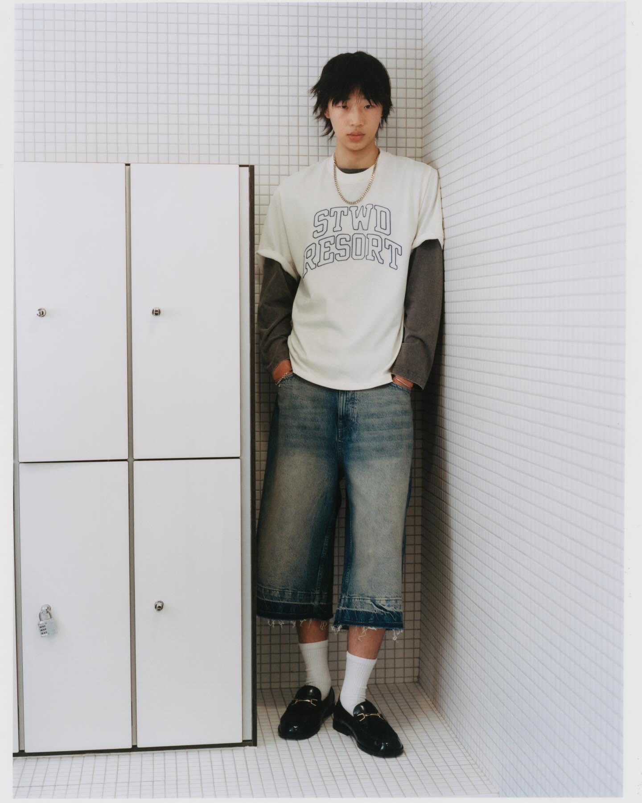

Men's Tops & Shirts
WGSN frames SS27 men's tops & shirts around versatility, comfort and wardrobe longevity — breathable fabrics, relaxed silhouettes and elevated essentials that move casual↔smart-casual. The structural shifts: linen & linen blends rising over standard cotton, boxy/layered fits, and a swing from checks toward expressive graphic tees (still-life, fruit & floral) and romantic-vintage detail. Core shirts/tees sit in WGSN's Protect stage — perennial bestsellers needing continuous, subtle innovation rather than reinvention.


Read: The total shirts category stays dominant and stable (~70–88% of the mix), but standard cotton shirts are gently declining while linen, resort and camp-collar shirts rise from a lower base — the data behind "linen overtaking cotton." Checks are softening (UK markdowns −2.5ppt S/S25 vs S/S24), opening space for retro florals. Net: protect the core, re-mix it toward linen / camp-collar / resort and expressive prints.
Menswear runs more natural/muted than womenswear — sun-drenched naturals, sky & washed indigo, with pops of butter, terracotta and botanical blue from print. Nearest indicative TCX; confirm against chips. Full sourcing tables at foot.
 WGSN · retail
WGSN · retail WGSN · catwalk
WGSN · catwalk


Linen, evolved — blends over pure swap
WGSN reads linen as overtaking standard cotton; the open web nuances it: rather than a clean swap, 2026–27 leans to cotton-linen blends, lightweight poplin and technical weaves that breathe but don't read sloppy — boxier silhouettes, relaxed collars, less-predictable colour.
Practical implication: back cotton-linen for hand + durability + cost, reserve 100% linen for hero/elevated.
Camp collar — structured & year-round
The structured camp collar is a defining 2026 menswear move: internal interfacing for a crisp upright roll, "chroma-muting" desaturated prints replacing loud tourist styling — resort recontextualised as a year-round, work-appropriate pillar (Todd Snyder, Luca Faloni, Orlebar Brown).
So: relaxed fit, but invest in collar architecture and heritage textiles, not flimsy rayon.
The data-backed core: total shirts dominate the mix, and within them linen, resort and camp-collar are the growth share while plain cotton softens. Protect the bestseller, re-mix the fabric and collar story, and let breathable naturals carry colour and texture newness.
Color story
Fabrics (overview)
- Cotton-linen blend & 100% linen
- Lightweight cotton poplin
- Seersucker / dobby for camp texture
Silhouettes
- Relaxed long-sleeve button-up
- Structured camp-collar short-sleeve
- Boxy resort shirt
Construction
- Collar: relaxed point or structured camp (interfaced)
- Fit: boxy/relaxed, cuffed sleeve option
- Detail: tonal/corozo buttons, single chest pocket, micro-tuck/jacquard
L1 · Linen layering shirtSilhouette
Relaxed LS button-up, point collar, single chest pocket; worn open over a tee.
Fabric
Cotton-linen 55/45, 120–150 gsm (airy slub). Hero alt: 100% linen 140–160 gsm.
Trims
Corozo/tonal buttons; tonal topstitch; pearl-finish optional; woven label.
Colour
Sky Blue 14-4214; Ecru 12-0910.
L2 · Structured camp-collar shirtSilhouette
Short-sleeve camp collar, boxy body, straight hem; or crisp poplin button-up.
Fabric
Cotton poplin 110–130 gsm / cotton-linen; seersucker/dobby option for texture.
Trims
Structured collar interfacing; corozo buttons; tonal stitch; chest pocket.
Colour
Chalk 11-0601; Sky 14-4214; desaturated print.
Prompt pack — ready to run on Slayteq
WGSN · catwalkWGSN · street


Overshirt — the transitional MVP
The overshirt/shirt-jacket is called "perhaps the most useful garment in the modern man's transitional wardrobe" — standalone on mild days, mid-layer when cold, or an open-front layer adding interest. Best SS26–27 fabrics: brushed cotton, lightweight flannel, textured linen blends; chore-jacket cut for pocket utility.
Anchor layering stories here; medium weight is the sweet spot for transseasonal sell-through.
Pigment-washed tee as the base layer
WGSN calls out pigment dyes and subtle textures on elevated essentials; the lived-in, garment-dyed tee is the natural layering partner under the overshirt — soft hand, faded depth, mix-and-match colour for modular dressing.
2026 menswear overall reads "layered and personal, casual but put-together" — exactly this pairing.
WGSN puts overshirts in Protect with a clear action: anchor layering with medium-weight styles. Pair with pigment-washed tees for full-look, modular selling — the "Modern Summer Escape" capsule logic.
Color story
Fabrics (overview)
- Cotton-linen canvas (overshirt)
- Brushed cotton / lightweight flannel
- Garment-pigment-dyed jersey (tee)
Silhouettes
- Boxy overshirt / shirt-jacket
- Chore-cut utility overshirt
- Relaxed garment-dyed crew tee
Construction
- Body: straight, slightly cropped, open-front
- Detail: twin patch pockets, felled seams, corozo buttons
- Finish: garment dye / enzyme wash on tee
L1 · Linen overshirt / shirt-jacketSilhouette
Boxy open-front overshirt, point collar, twin patch pockets, straight hem; layer over knit/tee.
Fabric
Cotton-linen canvas, 200–260 gsm (medium weight). Alt: brushed cotton.
Trims
Corozo buttons; twin patch + interior pockets; felled seams; woven label.
Colour
Ecru 12-0910; Olive 16-0840.
L2 · Pigment-washed layering teeSilhouette
Relaxed crew, slightly boxy, mid-weight; layering base or standalone.
Fabric
Single jersey, 100% cotton, 200–220 gsm, garment pigment dye.
Trims
Ribbed collar; twin-needle hem; garment dye/enzyme wash; woven label.
Colour
Sun-faded Sage 14-0210; washed indigo; terracotta.
Prompt pack — ready to run on Slayteq
 WGSN · retail
WGSN · retail WGSN · retail
WGSN · retail WGSN · retail
WGSN · retail WGSN · retail
WGSN · retail
Still-life & botanical prints lead 2026 men's tees
2026 graphic-tee trends centre on photorealistic botanical and still-life floral art — "Anthropologie-style" cottage botanicals, watercolour florals and botanical surrealism are top performers. Retail confirms it: mass players already sell a "Retro Botanical Floral Vase Graphic Tee."
Exactly the WGSN call: still-life, fruit & floral motifs, sun-drenched colour, relaxed fits.
Protect & expand — the volume engine
WGSN keeps tees in Protect — perennial bestsellers — and flags graphic tees to "expand expressive, bold graphics." With checks softening, the print budget moves to retro florals & still-life. Keep bodies relaxed/boxy and colour sun-faded for the vacation read.
Opening-price hero with high add-on attach rate; rotate prints fast, keep blanks core.
The expressive engine of the category — still-life bouquets, fruit and sun motifs on relaxed, sun-faded bodies. Protect the blank, expand the print story; this is where newness and add-on volume live.
Color story
Fabrics (overview)
- Single jersey 180–210 gsm
- Heavyweight boxy jersey 210–240 gsm
- Slub/textured jersey for hand
Silhouettes
- Relaxed / boxy crew tee
- Front placement still-life
- Large back-placement resort graphic
Construction
- Neck: ribbed crew, twin-needle
- Print: screen / DTG placement, soft-hand inks
- Finish: sun-fade / pigment wash option
L1 · Still-life floral graphic teeSilhouette
Relaxed crew, regular-boxy body, short sleeve; front placement bouquet + text.
Fabric
Single jersey, 100% cotton, 180–200 gsm.
Trims
Screen/DTG placement print (soft-hand); ribbed collar; twin-needle hem.
Colour
Chalk 11-0601 ground; butter/coral print.
L2 · Botanical print teeSilhouette
Boxy crew, slightly heavier hand; botanical line-art placement print.
Fabric
Heavyweight jersey 210–240 gsm, slub option.
Trims
Screen print; ribbed neck w/ taping; woven hem label.
Colour
Ecru 12-0910 ground; tonal print.
L3 · Back-print resort teeSilhouette
Relaxed crew, large back placement graphic, small front hit.
Fabric
Single jersey 190–210 gsm; sun-fade wash.
Trims
Back screen print; pigment/sun-fade finish; ribbed collar.
Colour
Off-white ground; faded coral 16-1539 / sage print.
Prompt pack — ready to run on Slayteq
WGSN · retail
Gothic / botanical etching — the storytelling print
Beyond bright bouquets, a darker thread performs: gothic botanical illustration — detailed scientific-style plant etchings, Victorian typography — strong on men's apparel in 2026. This is the romantic-vintage register: tonal line-art back prints, heritage feel, craft over logo.
WGSN's Buyers' Briefing "Romantic Vintage" + Test items (retro florals, openwork, poet) line up exactly.
Test, don't bet the line test
WGSN places romantic vintage / washed shirts in Test — trial poet styles, openwork and retro florals for occasion & festival dressing rather than core volume. Keep buys shallow, lean on storytelling and washes, read sell-through before scaling.
Natural home: elevated tee back-prints + a small poet/openwork shirt capsule.
The directional, Gen-Z storytelling bet — botanical etchings, retro florals, openwork and poet-shirt ease in washed finishes. Test in occasion/festival; harvest the print learnings back into the core tee program.
Color story
Fabrics (overview)
- Textured / jacquard cotton jersey
- Openwork / pointelle knit & lace-trim
- Washed lightweight poplin (poet shirt)
Silhouettes
- Botanical back-print tee
- Poet shirt (full sleeve, soft collar)
- Openwork / crochet-trim shirt
Construction
- Print: tonal line-art etching, back placement
- Detail: openwork panels, washed/distressed finish
- Trims: tonal buttons, woven heritage label
L1 · Botanical line-art back-print teeSilhouette
Relaxed crew, textured body; tonal blue botanical etching back print + small front mark.
Fabric
Textured / jacquard cotton jersey, 200–220 gsm (premium hand).
Trims
Tonal back screen print (fine line); ribbed collar w/ taping; woven heritage label.
Colour
Chalk 11-0601 ground; Botanical Blue 19-4053 print.
L2 · Washed poet / openwork shirt (test)Silhouette
Soft poet shirt (full sleeve, relaxed collar) or openwork-panel short-sleeve; washed finish.
Fabric
Washed lightweight poplin / cotton-linen 110–140 gsm; openwork/pointelle panels.
Trims
Tonal/corozo buttons; openwork or crochet trim; garment wash; heritage label.
Colour
Chalk 11-0601; Sky 14-4214; Terracotta 17-1340.
Prompt pack — ready to run on Slayteq
Cross-category styling per WGSN: full-look / capsule selling with matching sets and modular tops; layer the trapeze of menswear — overshirt over graphic tee over washed crew — for transseasonal value. Checks are softening (UK markdowns −2.5ppt) so re-weight print open-to-buy from checks → retro florals & still-life. Linen carries the elevated story; pigment-washed jersey carries the everyday.
| Swatch | Colour | Pantone TCX | Hex (nearest) | Used in |
|---|---|---|---|---|
| Ecru Linen | 12-0910 | #E8DCC8 | Linen · Overshirt | |
| Sky Blue | 14-4214 | #A9C7DE | Linen · Vintage | |
| Sun-faded Sage | 14-0210 | #C7D49B | Overshirt (tee) | |
| Butter Yellow | 12-0721 | #F2D479 | Graphic Tee | |
| Washed Indigo | 18-4029 | #3F5C7A | Overshirt · base | |
| Terracotta Clay | 17-1340 | #C26B4E | Vintage | |
| Chalk White | 11-0601 | #F1ECE3 | All themes | |
| Olive Khaki | 16-0840 | #9A8A5A | Overshirt · Linen | |
| Botanical Blue | 19-4053 | #2E4E9E | Vintage print | |
| Faded Coral | 16-1539 | #E08A70 | Graphic Tee |
Nearest indicative TCX references — confirm against physical chips before lab-dip / bulk.
| Fabric | Composition | GSM | Hand / finish | Region / mill | MOQ · lead | Certs |
|---|---|---|---|---|---|---|
| Cotton-linen shirting | 55/45 cotton-linen | 120–150 | Airy slub, dry | Surat / Kannur (Kerala) | ~600m · 35–45d | OEKO-TEX, Eu Flax opt |
| Pure linen shirting | 100% linen | 140–160 | Crisp, breathable | Kannur / China yarn | ~500m · 45d | European Flax (luxe) |
| Cotton poplin | 100% cotton | 110–130 | Smooth, structured | Tirupur / Erode | ~500m · 30d | BCI, OEKO-TEX |
| Seersucker / dobby | 100% cotton | 110–140 | Self-texture (camp) | Surat / Erode | ~500m · 35d | BCI |
| Cotton-linen canvas | cotton-linen | 200–260 | Medium, matte (overshirt) | Ludhiana / Surat | ~500m · 40d | OEKO-TEX |
| Brushed cotton / flannel | 100% cotton | 160–200 | Soft, brushed | Ludhiana | ~500m · 40d | BCI |
| Single jersey (tee) | 100% cotton | 180–200 | Soft, smooth | Tirupur | ~500 pc · 30d | BCI, OEKO-TEX |
| Heavyweight jersey | 100% cotton | 210–240 | Structured, boxy | Tirupur | ~500 pc · 35d | BCI |
| Pigment-dye jersey | 100% cotton | 200–220 | Faded, lived-in | Tirupur (garment dye) | ~500 pc · 35d | BCI |
| Textured / jacquard jersey | 100% cotton | 200–220 | Premium hand | Tirupur | ~500 pc · 40d | OEKO-TEX |
| Openwork / pointelle knit | 100% cotton | 5–7 gauge | Open, crafted (test) | Tirupur (handwork) | 300–500 pc · 45–60d | BCI |
GSM/MOQ/lead are indicative for costing — confirm with sourcing. India-first: Kannur/Kerala linen weaving, Surat shirting/blends, Tirupur knits/tees/pigment-dye, Ludhiana heavier wovens/overshirts; linen yarn often European flax / China.
| Trim | Type / spec | Placement | Region / source | MOQ |
|---|---|---|---|---|
| Corozo / tonal buttons | Corozo nut / matte resin | Front placket, cuff | Delhi / Bengaluru trims | gross |
| Camp-collar interfacing | Fusible, light structure | Collar | In-house / Surat | — |
| Placement print | Screen / DTG, soft-hand inks | Front / back (tee) | Tirupur print houses | 200–300 pc |
| Fine-line tonal print | Screen, single-colour etching | Back placement | Tirupur | 300 pc |
| Garment pigment dye / wash | Pigment / enzyme | Whole garment (tee) | Tirupur garment dye | ~500 pc |
| Patch / chest pockets | Self-fabric, twin | Chest / hip (overshirt) | In-house | — |
| Openwork / crochet trim | Cotton, narrow (test) | Placket / panel | Tirupur handwork | 300 pc |
| Twin-needle hem | Coverstitch | Hem / sleeve (tee) | Tirupur | — |
| Woven heritage label | Damask / woven | Neck / hem | Surat / Delhi | 1000 pc |
Elevation levers for menswear: structured camp collars, corozo buttons, soft-hand & fine-line prints, garment dye/wash, and (test) openwork — WGSN: subtle texture & finish refresh the Protect core.
Primary source — WGSN Pulse
- WGSN Pulse query: "spring summer 2027 tops and shirts for men" (Fashion Design access) — captured 30 Jun 2026.
- Buying Director's Briefing Men's Apparel Spring 27 · Core Item Update Men's Shirts & Wovens S/S 27 · Key Items Men's Shirts & Woven S/S 27 · Buyers' Briefing Men's CMD Spring 2027 (Romantic Vintage) · Restorative Comfort · Empowered Play · Age of Longevity · Mega Capsule Men's S/S 27 Modern Summer Escape.
Data
- WGSN TrendCurve Forecast S/S 27 — UK & US men's woven tops. Charts in WGSN_MensTopsShirts_SS27_captures/. Signal: cotton shirts declining, linen/resort/camp-collar rising; UK checks markdowns −2.5ppt.
External trend sources — web research (Jun 2026)
- Linen: Pirloni · Oasis Shirts
- Camp collar / resort: Yiume — camp collar · Yiume — resort
- Overshirt / layering: Ape to Gentleman · LDN chore jackets · Percival
- Graphic tee / botanical: Printful · DTFIL · live.ink (botanical/gothic) · Target (retail proof)
Imagery
- Reference images are original WGSN assets from the Pulse "Images" tab (WGSN_MensTopsShirts_SS27_captures/ref_01–33) — used as trend reference, not final designs.